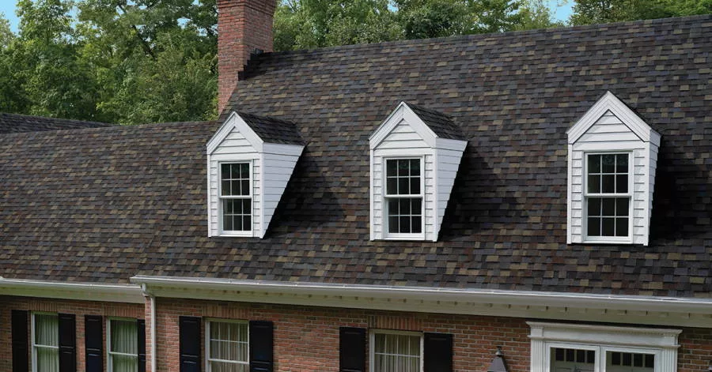

Asphalt shingles are the most widely used roofing material in Vermont - and for good reason. They're cost-effective, repairable, and when installed correctly, they handle Vermont's climate reliably for 25 to 30 years. The key phrase is "installed correctly." An architectural shingle with proper underlayment, the right ice-and-water shield coverage, and solid ventilation performs completely differently than the same shingle installed without those details.
Forthright installs Owens Corning Duration series as our standard product, backed by a 10-year Forthright workmanship warranty - four to five times the industry standard. We don't sub out roofing work.
What We Install
- Owens Corning Duration Series - architectural dimensional shingles rated to 130 MPH wind, SureNail technology for improved fastener holding in Vermont wind events, lifetime material warranty with OC registration
- Ice-and-water shield from eave edge to 24" past interior wall line minimum - further on homes with known ice dam history
- Synthetic underlayment over the full roof deck as a secondary water barrier
- Drip edge at eaves and rakes to prevent water wicking under shingle edges
- Step flashing at all wall intersections, pipe boots at penetrations, counter flashing at chimneys
- Stainless steel or hot-dipped galvanized fasteners throughout - no electrogalvanized nails

Owens Corning Warranty Tiers
OC Duration shingles have four warranty tiers - all lifetime on materials. Which tier you qualify for depends on how many OC components are installed and whether the contractor is certified.
- System Protection - 50-year TRU PROtection period, requires 3 OC components, 130 MPH wind. No OC workmanship coverage.
- Preferred Protection - adds 10-year OC workmanship coverage
- Platinum Promise - 25-year OC workmanship, requires Platinum contractor status
- Forthright 10-year workmanship - provided on every installation regardless of OC tier. This is the warranty that matters for installation quality.
Vermont Installation Details
Every Forthright asphalt shingle installation includes the details that separate a properly installed Vermont roof from one that looks right until the first ice season:
- Attic ventilation assessment before every job - inadequate ventilation is the root cause of most ice dam problems and accelerates shingle aging
- Ice-and-water shield from eave to 24" past interior wall line, more on ice-prone homes
- Full synthetic underlayment over the deck - not felt paper
- Proper starter strip at eaves and rakes with sealant strip facing up
- Six fasteners per shingle on steep-pitch installations and at rakes
Asphalt Shingle Roofing - FAQ
Asphalt shingles are cost-effective, widely available, and easy to repair if a section is damaged. Modern architectural shingles have improved dramatically in impact resistance, algae resistance, and wind ratings - many rated to 130 MPH. They come in a wide range of colors and profiles that complement Vermont's traditional home styles. A quality architectural shingle with proper underlayment, ice-and-water shield to code, and good attic ventilation will perform well in Vermont's climate for 25 to 30 years. For homeowners who want a proven, repairable, cost-effective roof, asphalt shingles are hard to beat.
For a typical Vermont single-family home, asphalt shingle replacement ranges from $8,000 to $18,000 depending on square footage, pitch, number of penetrations, and whether decking replacement is needed. These are installed costs including tear-off, disposal, all materials, and our 10-year workmanship warranty. We provide firm fixed-price bids after a site assessment - not ballpark numbers that grow after work starts.
10 years on all asphalt shingle roof installations. This covers installation defects - any leak or failure attributable to how the roof was installed. Material defects are covered by Owens Corning's manufacturer warranty. Storm damage is covered by homeowner's insurance. Our 10-year workmanship warranty is 4 to 5 times the industry standard of 1 to 2 years. We offer it because we're confident in how we install.
Yes - with the right installation details. Vermont's primary challenges are ice damming, heavy snow loads, and freeze-thaw cycling. The fixes are in the installation: ice-and-water shield must run from the eave edge at least 24 inches past the interior wall line, and proper attic ventilation is critical. Where asphalt falls short compared to metal is snow shedding - standing seam metal sheds snow naturally while asphalt holds it, which increases ice dam risk on lower-slope roofs.
Under 10 years old with isolated damage - repair is usually the right answer. 15 to 20 years old with widespread granule loss, multiple failed flashings, or recurring leak points - replacement is almost always more cost-effective. Over 20 years old on standard architectural shingles - replacement planning should start regardless of current condition. We give you a straight assessment at the estimate visit, not a sales pitch for replacement when repair is adequate.
Signs we look for: frost or ice on roof sheathing visible from the attic in winter, dark staining or mold on rafters, very high attic temperatures in summer, and ice dam history on a well-insulated home. Inadequate ventilation accelerates shingle aging, can void manufacturer warranties, and is the root cause of most ice dam problems. We assess every job before pricing it - if we find a ventilation issue we tell you before we start.